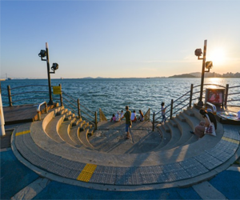
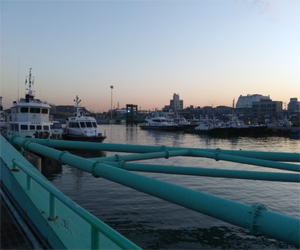
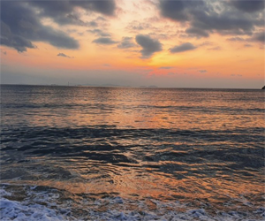
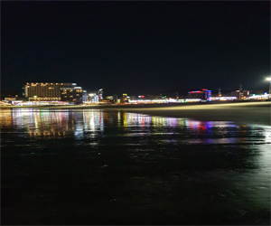
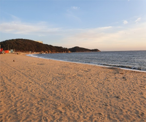
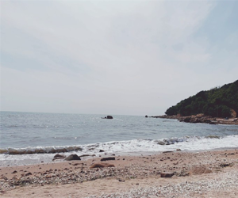

s<!DOCTYPE html>
<html lang="ko">
<head>
	<meta charset="utf-8">
	<title>중구 바다</title>
	<link rel="stylesheet" href="../css/see.css">
	
</head>
<body>
	<script src="../js/jquery-1.12.4.min.js"></script>
	<script src="../js/common.js"></script>
	<div class="wrap">
		<header id="header">
			<div class="inner clearfix">
				<h1 class="logo"><a href="junggo.html"></a></h1>
				<nav class="nav">
					<h2 class="blind">메인메뉴</h2>
					<ul>
						<li>
							<a href="#">먹거리</a>
							<ul>
								<li><a href="junggoeat.html">음식점</a></li>
								<li><a href="junggocafe.html">카페</a></li>
							</ul>
						</li>
						<li>
							<a href="#">관광지</a>
							<ul>
								<li><a href="junggosea.html">바다</a></li>
								<li><a href="junggocul.html">문화</a></li>
							</ul>					
						</li>
						<li>
							<a href="#">커뮤니티</a>
							<ul>
								<li><a href="#">자유게시판</a></li>
								<li><a href="#">리뷰</a></li>
							</ul>
						</li>
					</ul>
				</nav>
			</div>
		</header>
        <div class="article">
                <ul class="cenimg">
                    <li><a href="#"></a></li>
                    <li><a href="#"></a></li>
                    <li><a href="#"></a></li>
                </ul>
                <nav class="cenimgsub">
                    <a href="#"><b class="sub1">월미도</b></a>
                    <a href="#"><b class="sub2">연안부두</b></a>
                    <a href="#"><b class="sub3">영종도 마시안해변</b></a>
                </nav>
                <ul class="cenimg">
                    <li><a href="#"></a></li>
                    <li><a href="#"></a></li>
                    <li><a href="#"></a></li>
                </ul>
                <nav class="cenimgsub">
                    <a href="#"><b class="sub4">을왕리 해수욕장</b></a>
                    <a href="#"><b class="sub5">왕산 해수욕장</b></a>
                    <a href="#"><b class="sub6">선녀바위 해수욕장</b></a>
                </nav>


        </div>   
		<footer id="footer" class="clearfix">
			<p class="btm_logo"></p>
			<dl class="btm_menu">
				<dt class="blind"><strong>바닥메뉴</strong></dt>
				<dd><a href="https://www.instagram.com/"></a></dd>
				<dd><a href="https://www.facebook.com/"></a></dd>
				<dd><a href="https://twitter.com/?lang=ko"></a></dd>
			</dl>
			<p class="copy">copyright &copy; Inchoun Junggo, All rights reserved.</p>
		</footer>
	</div>


</body>
</html>